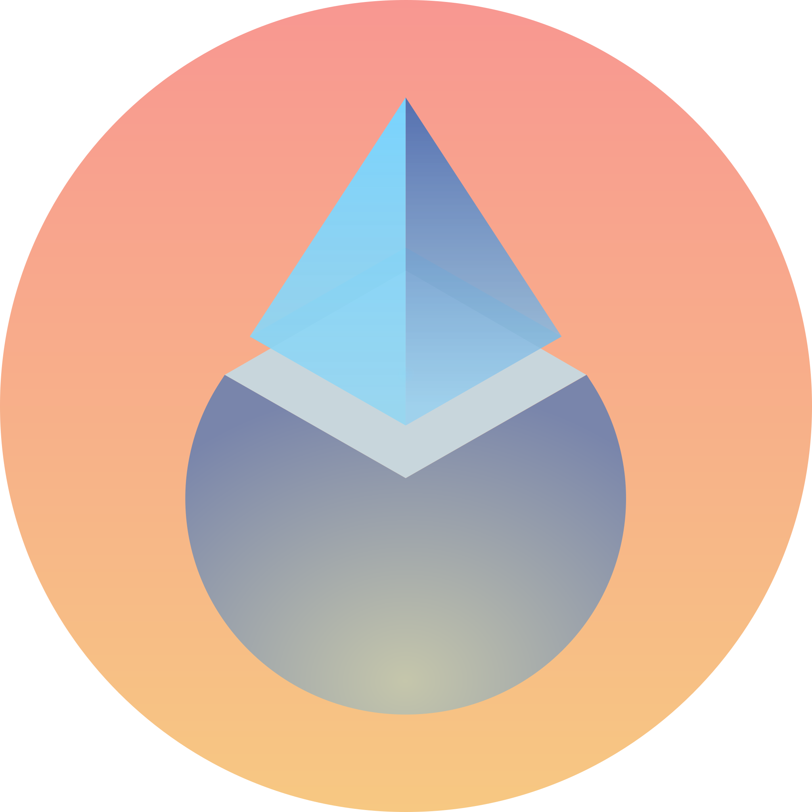
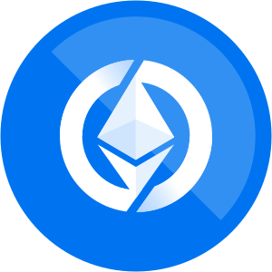

USD8 Building
USD8 is a stablecoin with two baked-in functions — free Defi Insurance and Order Enforcement.
Free Defi Insurance
USD8 users get Defi Insurance covering multiple defi protocols, across any position, up to 80%, completely free. Claims are onchain and permissionless. Funds come from USD8's Cover Pool. The more you use USD8, the more you are covered.
Order Enforcement
After claims, USD8 curates a White Hat Economy, chasing lost assets on an ongoing basis — enforcing orders for the Defi space and deterring future hacks.
Security
Security is the core of USD8. For every covered DeFi protocol we work alongside our audit partners to enforce rigorous audits and ongoing reviews. We accept independent security audits from OpenZeppelin. On top of that, we also accept SEAL Certification from Security Alliance when evaluating coverage for a protocol.


Use cases
-
For passive DeFi users who want their savings protected - Swap your stablecoins for USD8 and deposit into our Protected Savings to earn yield(est. 3-5%) while being protected. If this vault is hacked, you can claim upto 80% of your loss from the Cover Pool.
-
For advanced DeFi users actively managing their own yield strategies - Hold USD8 (or USD8 LSTs with yield) and freely use any Covered DeFi Protocols, now all your positions are protected by the Cover Pool.
-
For high-yield seekers with higher risk tolerance: deposit assets into our Cover Pool to share protocol revenue (estimated 15–30% returns). Be aware your assets might be used to offset losses from Covered DeFi Protocols, but our security team screens every covered protocol to reduce the chance of incidents.
Backed by USDC

USD8 can be minted 1:1 with USDC permissionlessly, these USDC collateral will be deployed to Defi platform for yield. Rest assured your USD8 is covered by the Cover Pool upto 80% incase anything goes wrong, you can redeem USD8 upto 80% value.
Redeem USD8 back to USDC will be also be permissionless, while we expect this process to be instant there might be a delay for large redeems because some external defi protocol might have a delay in their redeeming process, which is out of our control. However there will be an AMM pool available for swaps at anytime.
We are Crypto Native
We are crypto native — we live and breathe the decentralized dream and are committed to building projects that adhere as closely as possible to the Trustless Manifesto.
Join us if you share our vision.
TLDR; This video covers most of the philosophical theory about USD8, if you prefer to watch instead of reading.
The Broken Dream
As we embrace decentralized dream to resist the abuses of centralized power, we also give up the enforcement mechanisms that deal with wrongdoing. Without safeguards, crypto is slowly turning into a dystopia where bad actors like hackers and malicious founders are heavily incentivized and rewarded to hack and steal in broad daylight with little consequence.
This dystopia is slowly killing the decentralized industry following Gresham's Law, where good actors are gradually driven out till only bad actors left.
Failed Attempt
Early-stage Ethereum did have an attempted solution — "Code is Law", which uses smart contracts' immutability to prevent misconduct. Unfortunately, this hasn't worked out, largely due to vulnerabilities in smart contracts as well as the practical needs of upgradability, which remains as an industry disagreement till today.

Now that the crypto space is flawed, we didn't come up with a new solution but ignored the flaw because we have become numb to the hacks and rug pulls happening all the time. This is rather irresponsible. And it is even worse when we onboard the next million innocent users, exposing them to sophisticated hackers and social engineering attacks with their life savings at stake.
Philosophical Roots
We need a new solution, one without centralized power while still be able to deter malicious actors. USD8 is our attempt at this, our mission is to restore the missing layer of order enforcement in DeFi security.

USD8 is rooted in the philosophical proposal of anarcho-capitalism where a voluntary society would use insurance companies and private agencies to replace essential services provided by centralized state system. Incentives are carefully aligned in this system using capitalism and game theory to achieve a functional society without central government presents.
We adapted this model and made it crypto native, to provide the last missing piece for Defi and the whole crypto system. USD8 will be serving two major purposes - as insurance to cover users' losses and as an order-enforcing mechanism to recover hack losses.
The Insurance
USD8 offers coverage to DeFi users based on their USD8 usage history, covering a range of DeFi protocols vetted by the USD8 team. The more you use USD8, the more you are covered. If a hack occurs in any covered DeFi protocol, users can claim coverage (up to 80% value) with their covered LP token.
E.g., if Aave USDC market is hacked and 1 aUSDC drops to 0.3 USDC, users can claim up to 0.8 USDC with their aUSDC.
The actual coverage depends on 3 factors - the user's USD8 history, how many other users are also claiming, and the Cover Pool size.
The coverage funds come from USD8's Cover Pool, a public vault with different asset types, incentivized by USD8's revenue. Any LPs depositing into this vault will get stable coin yield in USD8, however assets in the Cover Pool might be deployed to cover any potential losses.
This insurance system is exciting because:
-
It is a first-in-the-industry coverage, free for all USD8 users, past and present.
-
It offers a new stream of yield in stable coins for assets that traditionally lack yield sources, like wBTC, or even alts like AAVE, LINK, UNI... unlocking capital efficiency.
Order enforcement
Since USD8 sits on a pile of hacked LP tokens after users claim, this puts USD8 in a unique position with significant financial incentives to recover these funds. USD8 will be cultivating a White Hat Economy as opposed to the current crypto system rewarding black hats. This white hat economy will involve the public in tracing and recovering the lost funds — read more on the White Hat Economy page.
This system could cultivate a positive culture with significant incentives for good actors and extra burden to deter malicious ones, potentially leads to perception reality to further reduce malicious acts for the industry as a whole - If hackers know they will be forever chased by the public and professionals for their wrongdoing, their decision to hack and steal might change at the moment of committing the crime.
Protected Savings Building

USD8 Protected Savings is a yield vault designed for passive DeFi users who want simple, deposit-and-forget yield with built-in protection.
Managed by USD8, this vault is covered by the Cover Pool for up to 80% of its value, subject to the pool’s limit.
Depositors receive yield-bearing sUSD8, which can be used to claim coverage from the Cover Pool, permissionlessly, at any time, up to 80% of the sUSD8 value, capped by the Cover Pool balance.
Cover Pool Building

The Cover Pool is a high yield vault consists of multiple assets, the yield comes from protocol revenue. Anyone can deposit into the pool at any time; withdrawals are subject to a 2-day cooldown period if there are no unresolved hacking events, longer (till claims finalised) if there are. Assets still accrue yield during cool down period.
Assets in the Cover Pool are not protected by USD8 and might be deployed to cover losses from protected Defi protocols. Depositors should be aware of the risk associated before depositing.
Covered DeFi Protocols
USD8, together with our security partners, independently vets and selects DeFi protocols that demonstrate the strongest security practices. Coverage is offered on a per-LP-token basis, depending on our security assessment, and is limited to a percentage of potential losses, capped by the Cover Pool balance.

Once coverage is offered, the Cover Pool will accept the specified LP token for claims at any time, permissionlessly. Claimants receive a proportional mix of assets matching the Cover Pool’s composition.
Planned coverage (Eth mainnet)
| Brand | Token Accepted | Address | Reimbursement(upto) |
 |
USD8 | TBD | 0.8 USDC |
|
USD8 Protected Savings sUSD8 | TBD | 0.8 USD8 |
| Aave Savings Gho sGHO | 0x1a88Df1cFe15Af22B3c4c783D4e6F7F9e0C1885d impl 0x50f9d4e28309303f0cdcac8af0b569e8b75ab857 |
0.8 GHO | |
| Curve Savings scrvUSD | 0x0655977feb2f289a4ab78af67bab0d17aab84367 impl 0xd8063123bba3b480569244ae66bfe72b6c84b00d |
0.7 crvUSD | |
 |
Lido stETH | 0xae7ab96520DE3A18E5e111B5EaAb095312D7fE84 impl 0x17144556fd3424edc8fc8a4c940b2d04936d17eb |
0.7 Eth |
 |
Sky Savings sUSDS | 0xa3931d71877c0e7a3148cb7eb4463524fec27fbd impl 0x4e7991e5c547ce825bdeb665ee14a3274f9f61e0 |
0.7 USDS |
 |
Yieldnest ynETHx | 0x657d9ABA1DBb59e53f9F3eCAA878447dCfC96dCb impl 0x9C1713BC42dCF621038F4016664fFAB096A05410 |
0.6 Eth |
 |
Origin OETH | 0x856c4efb76c1d1ae02e20ceb03a2a6a08b0b8dc3 impl 0xD86756dBb01e75A11AaDaCB75c8495759ED92033 |
0.6 Eth |
Claiming

- To start a claim, user transfers the protected LP token to the Cover Pool. Our front end will also calculate user's USD8 History Scores based on historical USD8 usage during this process and submit it on chain.
- The claim enters a 10-day window where others can join. After 10 days, that LP token is removed from the covered list and no new claims are accepted.
- Claimants can withdraw their reimbursement. The amount is calculated from total claims, each claimant’s USD8 History Score*, and the current Cover Pool balance. Payouts will match the Cover Pool’s asset mix.
After a claim, the protected LP tokens forfeited by claimers becomes the property of USD8 protocol.
USD8 History Score
USD8 History Score is calculated based on your USD8 holding history — how much you’ve held and for how long. More USD8 held for longer increases the score, this includes USD8 LSTs like USD8 savings and other LPs so you can still make yield.
USD8 History Score is computed off-chain with an open sourced algorithm, signed by the USD8's front end, and verified on-chain during a claim. Anyone can recalculate and validate every user's score.
USD8 History Scores reset after a successful claim.
Algorithm Details
Your USD8 History Score is your share of the cover pool, computed as a Shapley value:
Where:
- \(\omega_i\) — claimant \(i\)'s USD8 History Score (weight)
- \(\varphi_i\) — claimant \(i\)'s share of the cover pool before cap
- \(\rho_i\) — claimant \(i\)'s final reimbursement amount
- \(\kappa_{\text{protocol}}\) — coverage factor for the hacked protocol (e.g. 0.8 for USD8, 0.7 for Lido)
- \(\text{weight}_{\text{token}}\) — admin-configurable weight per qualifying token (raw USD8 highest, staked / LP lower)
- \(\text{balance}_{\text{token}}(t)\) — claimant's balance of that token at time \(t\)
- \(T\) — lookback window over which balances are integrated
- \(\text{loss}_i\) — claimant's loss value in the incident
Each holder's weight \(\omega_i\) is the sum across qualifying tokens of their balance integrated over time, scaled by an admin-configurable weight per token. Raw USD8 weighs heaviest; staked USD8 and LP positions weigh lower.
Your share \(\varphi_i\) is your weight divided by the total weight of all claimants on the same incident, times the cover pool. The actual reimbursement \(\rho_i\) is capped at your loss times the covered protocol's coverage factor \(\kappa_{\text{protocol}}\) — so you can never claim more than your covered loss, no matter how large your \(\varphi_i\) is.
This is the unique fair allocation in cooperative game theory — the only rule that satisfies all four Shapley axioms simultaneously (efficiency, symmetry, null-player, additivity). Pro-rata, time-weighted, and tier-based alternatives each violate at least one.
The algorithm is open-source and deterministic. Anyone can run it locally and reproduce any holder's score against the chain.
Cover Pool Size Projection
We’re modeling pool size as a function of
- supply growth
- reserve yield at est 6.5%
- budget locked at 2.1% of reserve yield
| Year | Y1 | Y2 | Y3 | Y4 | Y5 |
| USD8 Supply | $5M | $50M | $500M | $5B | $37B |
| % of USDT supply | 0.003% | 0.027% | 0.27% | 2.67% | 19.79% |
| Collateral Yield (est. 6.5%) | $325K | $3.25M | $32.5M | $325M | $2.41B |
| Cover Pool Yield Budget (2.1%) | $105K | $1.05M | $10.5M | $105M | $777M |
| Cover Pool size @ 15% APY | $700K | $7M | $70M | $700M | $5.18B |
| Cover Pool size @ 30% APY | $350K | $3.5M | $35M | $350M | $2.59B |
As shown in the estimation at Y5 if we achieve 20% Tether supply, we could unlock a cover pool size from 2.5-5 Billion per year for Defi, which will be significant enough as an insurance primitive for the whote industry.
Passing the Walkaway Test
Computing USD8 History Scores is critical for USD8. While relying on our front end works, that is not good enough, we are crypto natives, and we want to pass the Walkaway Test.
We are partnering with Brevis and using their ZK Coprocessor to independently compute USD8 History Scores. Users will be able to use Brevis's ProverNet to generate a cryptographic proof of their USD8 History Score based on their USD8 history. This proof can then be submitted directly to the USD8 payout contract onchain, which verifies it and processes the claim automatically.
Now, even if our team disappears, USD8 payouts will still function independently and trustlessly.

Boosters Live
Boosters are NFTs that can be burned when filing a claim to add a 1% boost to your total USD8 History Score, meaning more insurance coverage for your funds in Defi protocols. Boosters are
- usable after USD8 is launched and the Cover Pool is in operation
- stackable, 2 Boosters give you 2%. No limits
- freely transferrable
Booter contract Eth mainnet 0x6f74ce39bb1d75c56e2fe5f349a6a5f51ce6f12d
Collect Boosters
Boosters are not for sale. They are distributed only to users who help USD8 grow. To get Boosters, you can
- post on social media about USD8 (do not spam)
- follow our X and Telegram and engage in meaningful discussions
- contribute to any of the Open Challenges
Our team monitors social channels will reach out to offer Boosters. If your posts has lots of impact, you will get multiple Boosters.
You can also send links to your posts in our Telegram group or ping USD8 on X.com to request Boosters if we missed any.
Happy collecting.
Check Your Boosters
Enter an Ethereum address to check Boosters
White Hat Economy Building
The White Hat economy is the enforcement layer of USD8. It plays a critical role in recovering lost assets and deterring future malicious activities in Defi.
After a successful claim, the forfeited LP tokens become the property of the USD8 protocol, providing the financial engine to power the White Hat economy. We plan to explore multiple mechanisms depending on the size of the hack:
📈 Tokenized Distressed Debt Market
Deploy on-chain primitives such as AMMs and bonding curves to facilitate tokenized distressed debt markets, unlocking a brand new primitive for Defi. Using this as a mechanism to fund early-stage recovery.
🎯 Permanent Bounties & Anonymous Tips
Bounties up to a million dollars without an expiry date, paid in USD8 from the recovered funds. A hacker who launders successfully today still has a price on their address ten years from now.
Allow anyone to submit tips anonymously — wallet clusters, exchange deposits, off-ramp paths — tied to a specific incident. Submissions are timestamped and attributable; all submissions that help recover the lost funds will share a portion of the final bounty.
🕵️ White Hat Guild & Open Education
Direct sponsorship of white hat groups, independent investigators, forensic firms, and ex-law-enforcement specialists. Alongside this, free curriculum, workshops, and tooling that lower the barrier for new investigators to participate. The more people who can read a transaction graph, the less defensible black-hat behavior becomes.
⚖️ Legal Action & Law Enforcement
Direct fund civil suits, asset freezes, and cross-border legal coordination. A standing point of contact with relevant agencies in major jurisdictions, packaged with the evidence formats they actually use.
Why This Matters
Insurance alone is reactive. The Cover Pool makes users whole after a hack, but it does not change the incentives that produced the hack in the first place.
The White Hat Economy is the second half of USD8's thesis — turning the proceeds of every claim into pressure on the attacker, and turning every member of the public into a potential adversary for bad actors. Combined with the Cover Pool, this is what closes the loop: victims get covered, recoveries fund more coverage, and the cost of attacking DeFi rises every time the system is used.
This is also how USD8 addresses the deeper problem laid out in our Philosophical Roots — the missing alignment and enforcement layer that has let malicious activity flourish in crypto. By rewarding good actors and imposing permanent, compounding risk on bad ones, the White Hat Economy realigns the industry's incentives and, over time, deters the next hack from being committed in the first place.
Help Needed Live
USD8 is a brand new primitive for DeFi — a usage-based free insurance layer combined with a white-hat-funded enforcement layer. Nothing quite like this has been built before, so there are real unsolved challenges in the design and we don't pretend to have all the answers.
We are asking the broader crypto community — researchers, security professionals, mechanism designers, lawyers, white hats — to help us pressure-test the model and close the gaps.
Please post contributions in our GitHub Discussions — that is the canonical place for proposals, critiques, and design ideas. You can also reach us on Telegram or X.
Open Challenges
1. Hacker double dipping mechanism design
Currently hackers can claim insurance payouts on own positions they exploited. Although we believe the likelihood is low as it requires significant extra capital from hackers to be worthwhile, we would like to find a neat solution doesn't cause too much system overheads.
2. Universal Coverage for all Eth Users partnerships
Today, USD8 coverage is tied to a user's USD8 usage history. We would love to extend this into a universal coverage layer for every Ethereum address — similar in spirit to the FDIC.
Doing so requires a meaningful capital commitment from a major ecosystem actor such as the Ethereum Foundation, held either as USD8 or deposited into the Cover Pool as an LP. With that backing in place, we could offer a base level of insurance to every Ethereum address up to a fixed amount, regardless of USD8 usage history, with the cap scaled to the size of the commitment.
We would like some help in getting in touch with potential ecosystem actors.
3. White Hat Economy Design mechanism design
We would love some help in exploring how existing DeFi primitives — such as prediction markets — could be used to facilitate the White Hat Economy.
4. Theory awareness marketing
USD8 is grounded in Anarcho-Capitalism theory — the idea that a decentralized society like crypto still needs an enforcement layer to align incentives correctly, just one built on incentive design and game theory rather than centralized power. More on the reasoning is in our Philosophical Roots.
Getting this idea in front of the right people has been very challenging so far. We would love help getting the word out to crypto KOLs, researchers, and industry stakeholders who care about the long-term future of the space — anyone worries about Defi security and the future of the Ethereum ecosystem.
What We Can Offer In Return
USD8 is just starting and our resources are limited, but we want to recognize people who help us build this.
- Boosters
- Permanent attribution — public acknowledgement of the contribution on the USD8 website or in the associated smart contracts. Recognition does not expire
- Priority on work and collaboration — early contributors are first in line for paid work, audits, and partnerships as USD8 grows
- Financial incentives where budget allows — as revenue grows we expect to set aside budget for direct compensation on specific problems.
FAQs
💭 Can I just buy USD8 and use it for claiming whenever I need it?
No. Cover amount depends on your USD8 usage history, without it you will not get much coverage. It's best to start using USD8 so you can build up your history.
💭 I have no USD8 now, but I used USD8 before, do I still get coverage?
Yes. As long as you have used USD8 before, you will get some coverage.
💭 So I have to hold USD8 to build a USD8 History Score?
No. While holding USD8 certainly build your USD8 History Score, you can also deposit USD8 to a recognized yield vault; these will also count towards your USD8 History Score.
💭 How safe is the Protected Savings vault?
It is one of the safest savings vaults because it comes with an 80% coverage. This means you can always claim up to 80% of your position value from the Cover Pool if something goes wrong.
On top of that, you still earn competitive yield.
💭 How safe is the Cover Pool?
Assets deposited in the Cover Pool might be deployed to cover hacking losses from Covered Protocols. This makes it riskier than the Protected Savings vault, which is why it offers a higher APY.
Our security experts independently vet and audit every protocol before offering coverage. Claims are not expected to occur often, but there is always a possibility.
💭 So all my positions in Covered DeFi Protocols are protected?
Yes. As long as you use USD8, you are covered. The more USD8 and the longer you hold, the higher your USD8 History Score.
💭 Do I forfeit my covered LP token when claiming from the Cover Pool?
Yes. To claim from the Cover Pool, you must provide a covered LP token, which becomes the assets of USD8 protocol.
💭 Will I always get 80% of my money back for a defi protocol with 80% coverage?
Not necessarily. The actual reimbursed amount depends on:
- Your USD8 History Score based on your USD8 history
- How many other users are claiming and their USD8 History Scores
- The balance of the Cover Pool
In practice, the more USD8 History Score you have, the higher your claim weight. The max reimbursement amount is 80% your LP value, but it is also possible you might get less than that.
💭 How do you prevent fraudulent claims?
USD8 only covers up to 80% of any position at max. Unless the LP token’s value drops below 80%, it is not financially rational to file a false claim.
💭 How does USD8 make money?
Like most stablecoins, USD8 generates revenue from collateral yield. USD8 also earns from recovering losses through the White Hat Economy.
💭 How can I contribute or help with USD8?
We are a brand new primitive with real unsolved challenges, and we welcome community contributions across mechanism design, partnerships, marketing, and more. See the Help Needed page for the current list of open challenges. The best place to post proposals, critiques, and ideas is our GitHub Discussions. Contributors can earn Boosters, permanent on-chain attribution, and priority on future paid work.
💭 Who is behind USD8?
USD8 was founded by an OpenZeppelin auditor and security researcher with over 5 years of experience, specializing in auditing DeFi protocols.
We are passionate about DeFi security and dedicated to building solutions that make the on-chain environment safer.
Contact

Hi I am the core dev behind USD8, during the day I work as a Security Researcher at OpenZeppelin. You can reach out to me via the following channels.
- telegram https://t.me/+e84i2oYk1ao1MTk1
- X @usd8_fi or @codephobic
- GitHub Discussions https://github.com/orgs/Usd8-fi/discussions
Branding Assets

Round logo. SVG or 1000px PNG

Round logo with name. SVG or 1000px PNG

White logo. SVG or 1000px PNG

Black logo. SVG or 1000px PNG
{kind=link}
{kind=link}
{kind=link}
{kind=link}
{kind=link}
{kind=link}
{kind=link}
{kind=link}